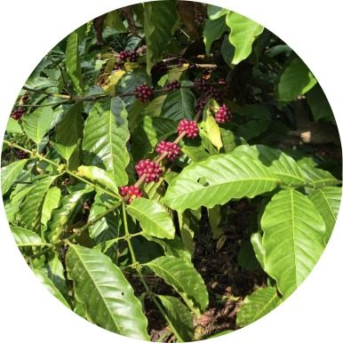

罗布斯塔
精品罗布斯塔
种植于海拔1,000米以上的高品质罗布斯塔，豆体干净、密度高，满足商业及精品烘焙商的需求。
自有庄园产地 · 优质品质
来自印度卡纳塔克邦库格（科达古）拥有40余年历史的高海拔自有庄园，提供精品罗布斯塔与阿拉比卡咖啡豆。林荫种植、日晒干燥、纯净无添加，服务烘焙商、咖啡馆及批量采购客户。
1,094m
海拔高度
40年+
悉心经营的庄园历史
100%
在原生树荫下种植
6–8天
庄园自然日晒干燥
关于庄园
我们的咖啡庄园位于印度卡纳塔克邦西高止山脉保护林边缘的库格帕兰加拉，四十多年来一直受到精心照料。
40多年来持续管理与种植，让土壤和遮荫林冠自然成熟。
在庄园日晒干燥的100%天然、纯净咖啡豆，完整保留库格高海拔的独特风土。


风土
1,094m
海拔
位于库格帕兰加拉海拔1,094米处，凉爽的气温区间孕育出密度高、缓慢成熟的咖啡果。
100%
林冠
在原生遮荫树下种植，保持表层土壤水分和本土生物多样性。
高糖度
微气候
稳定的微气候带来自然甜感，使果实拥有较高的糖度（Brix）。
咖啡
在树荫下生长、于自有庄园日晒干燥的库格罗布斯塔与阿拉比卡咖啡豆，口感顺滑、酸度低，适合意式拼配与黑咖啡。
罗布斯塔
种植于海拔1,000米以上的高品质罗布斯塔，豆体干净、密度高，满足商业及精品烘焙商的需求。
处理法
在阳光下自然干燥，不添加任何香料、人工添加剂或化学加工助剂，呈现庄园纯正风味。
杯测
顺滑均衡的风味，适合意式拼配和传统黑咖啡。
阿拉比卡
庄园60%的面积种植阿拉比卡，与精品罗布斯塔一同在海拔1,094米处林荫种植。

纯净无添加的庄园咖啡，不含任何香料或化学加工助剂。

可持续发展
01
在严格的健康标准内平衡使用氮磷钾肥与有机堆肥，支持植株健康，增强土壤应对气候变化的能力。
02
目前利用季节性季风降雨，专用雨水收集池今年正在建设中。
03
多层天然林冠保持整个庄园的表层土壤水分和本土生物多样性。

供应
直接从庄园订购库格咖啡豆，从样品数量到面向烘焙商、咖啡馆和出口买家的批量订单均可满足。
直接来自自有庄园的单一产地阿拉比卡与罗布斯塔。
可根据需求，通过区域内经过严格筛选的合作庄园采购更多数量或有机微批次。
运营透明、品质可靠，符合安全、合规及定制规格要求。

常见问题
为寻找印度库格罗布斯塔和阿拉比卡咖啡豆的烘焙商、咖啡馆及采购商解答常见问题。
卡纳塔克邦的库格（科达古）是印度最著名的咖啡产区之一，咖啡生长在西高止山脉原生森林的树荫下。我们的庄园位于库格帕兰加拉，海拔1,094米，毗邻保护林，孕育出密度高、缓慢成熟的咖啡果。
两者都有。庄园60%的面积种植阿拉比卡，同时我们也在海拔1,000米以上种植高品质精品罗布斯塔，豆体干净、密度高，适合商业及精品烘焙商。
我们的咖啡100%天然，在庄园日晒干燥6至8天，不添加任何香料、人工添加剂或化学加工助剂。
请通过本页面的咨询表单、电子邮件（coffeeichiban@gmail.com）或电话（+91 98840 61496）联系我们。告诉我们采购量、烘焙偏好和时间安排，我们将为您提供样品、规格和报价。
可以。除自有庄园的单一产地阿拉比卡和罗布斯塔批次外，我们还可根据需求，通过库格地区经严格筛选的合作庄园采购更多数量或有机微批次。
是的。我们与商业及精品烘焙商、咖啡馆和批量采购客户合作，运营透明、品质可靠，符合安全、合规及定制规格要求。